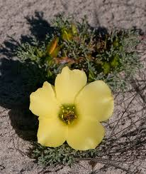

Neuradaceae
(No widely accepted common name)
Neuradaceae is a small family of annual or perennial herbs, often prostrate and densely hairy, belonging to the order Malvales within the Rosids clade (Malvids). Comprising three genera (Neurada, Grielum, Neuradopsis) and about 10 species, the family is adapted to arid and semi-arid regions of Africa (southern and northeastern) and the Middle East extending to India. They are characterized by often lobed leaves, flowers with 10 stamens, an inferior or semi-inferior ovary, and distinctive fruits enclosed within a persistent, often spiny or winged, hypanthium/calyx.
Overview
The Neuradaceae family includes about 10 species of low-growing, often densely woolly or glandular-hairy herbs adapted to desert and dryland environments. The three genera are geographically distinct: Neurada occurs from North Africa through the Middle East to India, while Grielum and Neuradopsis are found in southern Africa (primarily Namibia and South Africa).
These plants were previously placed within Rosaceae due to superficial similarities in flower structure (e.g., presence of a hypanthium, 5 petals, multiple stamens), but molecular data firmly places them within the Malvales order, where they represent a distinct lineage. Their unique fruit structure, where the actual nutlets are enclosed within the hardened, often spiny or winged floral tube (hypanthium/calyx), is a key characteristic and likely an adaptation for animal dispersal (epizoochory) in arid environments.
The family has minimal economic importance but is of interest for its adaptations to aridity and its phylogenetic position within Malvales.
Quick Facts
- Scientific Name: Neuradaceae Kostel.
- Common Name: (None widely used)
- Number of Genera: 3 (Neurada, Grielum, Neuradopsis)
- Number of Species: Approximately 10
- Distribution: Arid/semi-arid regions: N Africa, S Africa, Middle East to India.
- Evolutionary Group: Eudicots - Rosids - Malvids - Malvales
Key Characteristics
Growth Form and Habit
Annual or perennial herbs, often prostrate or low-growing and spreading. Plants are typically covered in dense, soft, often woolly or glandular hairs.
Leaves
Leaves are alternate, simple but often deeply lobed or pinnatifid (sometimes entire or toothed). Stipules are present, usually small.
Inflorescence
Flowers are solitary in leaf axils or borne in few-flowered cymes.
Flowers
Flowers are bisexual and actinomorphic (radially symmetrical). A distinct hypanthium (floral tube formed by fused bases of sepals, petals, stamens) is present. Key features include:
- Calyx: 5 sepals, triangular or lanceolate, persistent and often enlarging and becoming spiny or winged in fruit, borne on the rim of the hypanthium. An epicalyx (whorl of bracts below calyx) is sometimes present.
- Corolla: 5 petals, free, usually yellow or white, inserted on the hypanthium rim, often falling early.
- Androecium: Stamens typically 10 (rarely 5), usually arranged in two whorls of 5, inserted on the hypanthium rim. Filaments distinct.
- Gynoecium: Ovary is inferior or semi-inferior (adnate to the hypanthium), composed of (3-)5-10 fused carpels (syncarpous). It is multilocular, with each locule containing a single pendulous ovule. Styles are distinct or fused at the base, persistent.
Fruits and Seeds
The fruit is distinctive: an aggregate of indehiscent, one-seeded nutlets or a woody structure derived from the ovary, which remains enclosed within the persistent, hardened, and often accrescent (enlarging) hypanthium and calyx. This entire structure functions as the dispersal unit (diaspore), often appearing bur-like due to spiny or winged outgrowths from the hypanthium/calyx, facilitating animal dispersal.
Chemical Characteristics
Chemical constituents are not extensively studied across the family. Mucilage may be present, consistent with placement in Malvales.
Field Identification
Identifying Neuradaceae involves recognizing their low-growing, often hairy herbaceous habit, alternate lobed leaves, 5-petaled flowers with 10 stamens, and especially the unique, often spiny or winged, bur-like fruit enclosing the actual nutlets, found in specific arid regions.
Primary Identification Features
- Habit: Prostrate or low-growing herbs, often densely hairy (woolly/glandular).
- Leaves: Alternate, simple but often deeply lobed or pinnatifid.
- Flowers: Actinomorphic, 5 sepals, 5 petals (often yellow/white), 10 stamens.
- Ovary: Inferior or semi-inferior, multilocular (5-10 carpels).
- Fruit: Aggregate of nutlets enclosed within a persistent, hardened, often spiny or winged hypanthium/calyx (bur-like diaspore).
- Distribution: Arid regions of Africa, Middle East to India.
Secondary Identification Features
- Stipules: Present, small.
- Hypanthium: Distinct floral tube present.
- Habitat: Deserts, sandy plains, drylands.
Seasonal Identification Tips
- Growing Season: Typically grow and flower after seasonal rains in their arid habitats.
- Fruiting Season: The persistent, bur-like fruits are highly diagnostic and may remain on the ground or attached to dead plants for extended periods, aiding identification even outside the main growing season.
Common Confusion Points
- Zygophyllaceae (Caltrop Family): Also occur in arid regions, some are prostrate herbs with lobed leaves and spiny fruits (e.g., Tribulus). Differ in having opposite leaves (usually), flowers with superior ovaries, and fruit typically a schizocarp splitting into spiny segments (not enclosed in hypanthium).
- Asteraceae (Sunflower Family): Some desert composites are low-growing and hairy, but have characteristic composite flower heads (capitula) and achene fruits often with a pappus.
- Geraniaceae (Geranium Family): Some desert species (e.g., Monsonia, Erodium) are hairy herbs, but have flowers with superior ovaries and distinctive schizocarpic fruits with awns (beaks).
- Rosaceae (Rose Family): While historically linked, Rosaceae typically have numerous stamens, often stipules fused to petiole, superior or inferior ovaries, and diverse fruit types (pomes, drupes, follicles, achenes often on receptacles), but lack the Neuradaceae-type fruit enclosed in a spiny hypanthium.
Field Guide Quick Reference
Look For:
- Low, hairy herbs (arid regions)
- Alternate, often lobed leaves
- Flowers with 5 sepals, 5 petals, 10 stamens
- Inferior/semi-inferior ovary
- Fruit enclosed in persistent, spiny/winged hypanthium/calyx (bur-like)
Key Variations:
- Hair type (woolly vs. glandular)
- Degree of leaf lobing
- Shape/ornamentation of the fruiting structure (spines vs. wings)
Notable Examples
The family comprises three distinct genera:

Neurada procumbens
(Neurada, Tribulus-like plant)
The sole species in its genus, found in deserts from North Africa to the Middle East and India. A prostrate annual herb covered in dense white woolly hairs. Leaves are ovate and lobed. The fruit is enclosed in a distinctive flat, disc-shaped, spiny structure derived from the hypanthium/calyx, aiding dispersal by adhering to animals.

Grielum spp.
(Devil's Thorn, Pietsnot)
A genus of about 5 species endemic to arid regions of southern Africa (Namaqualand, Karoo). Annual or perennial herbs, often with deeply pinnatifid leaves and relatively large yellow flowers. The fruit is enclosed in a hardened hypanthium/calyx that often bears prominent spines or wings.

Neuradopsis spp.
(Neuradopsis)
A genus of about 4 species found in southern Africa (Namibia, Botswana, South Africa). Similar to Grielum but differing in details of the fruit structure (e.g., lacking prominent spines or wings found in some Grielum). Often perennial herbs with taproots.
Phylogeny and Classification
Neuradaceae is placed in the order Malvales, within the Malvids clade of Rosids (eudicots). Its inclusion in Malvales, alongside families like Malvaceae, Cistaceae, and Thymelaeaceae, is strongly supported by molecular data, despite its superficial resemblance to some Rosaceae.
Within Malvales, Neuradaceae represents one of the earlier diverging lineages, potentially sister to a clade containing Thymelaeaceae, Sphaerosepalaceae, and Bixaceae, or perhaps sister to Muntingiaceae+Cytinaceae. Its exact position is still refined by ongoing research, but it clearly belongs outside the core Malvaceae/Cistaceae/Dipterocarpaceae group.
Position in Plant Phylogeny
- Kingdom: Plantae
- Clade: Angiosperms (Flowering plants)
- Clade: Eudicots
- Clade: Rosids
- Clade: Malvids
- Order: Malvales
- Family: Neuradaceae
Evolutionary Significance
Neuradaceae provides insights into Malvales evolution and adaptation:
- Basal Lineage in Malvales: Helps understand the early diversification patterns and ancestral traits within the order.
- Adaptation to Aridity: Represents a lineage within Malvales highly specialized for survival in desert and dryland environments, showcasing adaptations like dense hair coverings and specialized dispersal units.
- Fruit Evolution: The unique fruit structure, involving the accrescent hypanthium/calyx forming a bur-like diaspore, is a remarkable evolutionary innovation for dispersal in arid zones, likely via attachment to animals (epizoochory).
- Phylogenetic Placement: Its firm placement in Malvales despite previous association with Rosaceae highlights the power of molecular data in resolving phylogenetic relationships obscured by morphological convergence or divergence.